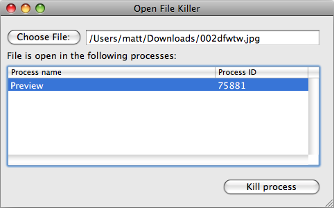

Please note: this article is part of the older "Objective-C era" on Cocoa with Love. I don't keep these articles up-to-date; please be wary of broken code or potentially out-of-date information. Read "A new era for Cocoa with Love" for more.
Invoking other processes in Cocoa
Invoking other processes is a good way to handle some low-level tasks on the Mac. I'll show you some simple ways to invoke processes and parse their outputs in Cocoa apps as well as some advanced tricks like running a process with administrator privileges.
The Sample Application: Open File Killer
Have you ever tried to empty the Trash, only to be told that some process has one of the files open so Trash can't delete it now?
This week's sample application solves that problem. Drag a file onto Open File Killer and it will tell you all the processes that have the file open and lets you kill them if needed.
How Open File Killer works
This program invokes two other processes to perform its work:
- lsof - to find the processes that have the specified file open
- sh - run with administrator privileges to send a SIGKILL to processes
Be careful when using the "Kill process" button — arbitrarily killing system processes can be dangerous to data and system stability so use with caution.
Starting another process with NSTask
You can launch other applications using NSWorkspace's launchApplication: and they will appear as though you launched them from the Finder. To run processes that are not applications, you will typically use NSTask instead.
NSTask does provide the convenience method launchedTaskWithLaunchPath:arguments: to launch another process in one line, however this method does not allow access to the launched task's standard output, which we'll need to get results from lsof.
Reading output from NSTask requires setting up NSPipes and reading from the NSFileHandle for each pipe. Since all this can be a bit verbose, we'll create a reusable method with the following prototype:
+ (NSString *)stringByLaunchingPath:(NSString *)processPath
withArguments:(NSArray *)arguments
error:(NSError **)errorThis is similar to launchedTaskWithLaunchPath:arguments: but returns the standard out as a string and returns standard error in the userInfo property of the NSError under the key @"standardError".
Excluding the error handling parts, the implementation of this method is as follows:
NSTask *task = [[[NSTask alloc] init] autorelease];
[task setLaunchPath:processPath];
[task setArguments:arguments];
[task setStandardOutput:[NSPipe pipe]];
[task setStandardError:[NSPipe pipe]];
TaskOutputReader *outputReader = [[TaskOutputReader alloc] initWithTask:task];
NSString *outputString = nil;
NSString *errorString = nil;
[outputReader launchTaskAndRunSynchronous];
outputString =
[[[NSString alloc]
initWithData:[outputReader standardOutputData]
encoding:NSUTF8StringEncoding]
autorelease];
errorString =
[[[NSString alloc]
initWithData:[outputReader standardErrorData]
encoding:NSUTF8StringEncoding]
autorelease];
[outputReader release];The TaskOutputReader is a simple class that invokes launch on the task and runs the current NSRunLoop, reading from the standardOut and standardError of the task until the task terminates.
The strangest part to me is the NSPipe part — NSPipe is an opaque class (you can't do anything directly to it) that only works with NSTask and allows you to subsequently invoke fileHandleForReading/fileHandleForWriting. To me, it really seems as though NSPipe shouldn't exist at all and any Unix-level pipes and file descriptors should be created on demand when you invoke standardOutput.
Anyway, that's why I always use a convenience method to wrap it all up. The only reason why you shouldn't use a convenience method like this is if you want progressive output updates (like line-by-line log file output) or two-way communication (command and response) since you can't simply block a return to the calling function these cases.
Parsing text
So we can use the stringByLaunchingPath:withArguments:error: method to launch lsof and pass the path of the file.
The result from lsof looks something like this:
COMMAND PID USER FD TYPE DEVICE SIZE/OFF NODE NAME
Preview 78180 matt txt REG 14,2 52889 1233935 /Users/matt/Downloads/002dfwtw.jpgWe need to parse this result and extract the information that is useful to us: the first two columns of the second row. I know, there are arguments to lsof that will produce more "computer-readable" output but when done right, parsing this output should be easier than reading man-page documentation.
The base Cocoa classes do no really handle sophisticated text parsing on their own. There is no regular expression library by default (get yourself a copy of OgreKit or RegexKit to do that) and while NSString has a few manipulation methods, many of the chop, split, tokenize and line-at-a-time handling functions and operators that are common in scripting languages, do not appear in Cocoa.
You can guess at the reason behind some of these decisions. I would suggest that you're not supposed to store structured data in pure text strings in a language with sophisticated real data structures, so Cocoa doesn't try to make it easier for you.
Another reason would be that C-based languages are more about giving you the basic building blocks to make efficient solutions over any domain, not about giving you already-domain-specific pre-canned solutions. AppKit/UIKit are obvious exceptions where complete, domain-specific solutions are given but in those cases, the solution domain for "application framework" is already fixed (Mac OS X/iPhone), so they are not really narrowing the potential solutions.
The result though, is that any project requiring text handling will likely need to implement a few simple text handling methods. You can get quite practised at using the "basic building blocks" to write small parser methods to handle data that comes from plain text sources like lsof's output.
- (NSArray *)arrayBySeparatingIntoParagraphs
{
NSUInteger length = [self length];
NSUInteger paraStart = 0;
NSUInteger paraEnd = 0;
NSUInteger contentsEnd = 0;
NSMutableArray *array = [NSMutableArray array];
NSRange currentRange;
while (paraEnd < length)
{
[self
getParagraphStart:¶Start
end:¶End
contentsEnd:&contentsEnd
forRange:NSMakeRange(paraEnd, 0)];
currentRange = NSMakeRange(paraStart, contentsEnd - paraStart);
[array addObject:[self substringWithRange:currentRange]];
}
return array;
}You might ask about this function: "Why not just use the existing componentsSeparatedByString: and pass @"\n" as the string?"
The answer is largely because it is recommended that you don't assume \n is the paragraph separator in case the paragraph separator is a Windows line-feed (\r\n) or an old Mac OS 9 carriage return (\r). Okay, irrelevant here but this method can be used anywhere where you need to break an NSString into paragraphs.
Also, if you needed to optimize your code, getParagraphStart:end:contentsEnd:forRange: allows you to parse each line inside the loop, avoiding the need to create the array of lines at all. This is something that the upcoming "blocks" feature of Objective-C will make much easier since you'll be able to pass the block for the inside of the loop as a parameter to the method.
You might also be curious about the difference between a "paragraph" and a "line", especially since the method getLineStart:end:contentsEnd:forRange: also exists. The difference is minor — lines also break on the rarely seen Unicode line-break character (sometimes used to represent HTML's <br>). In this case, it doesn't really matter.
- (NSArray *)tokensSeparatedByCharactersInSet:(NSCharacterSet *)separator
{
NSScanner *scanner = [NSScanner scannerWithString:self];
NSMutableArray *array = [NSMutableArray array];
while (![scanner isAtEnd])
{
[scanner scanCharactersFromSet:separator intoString:nil];
NSString *component;
if ([scanner scanUpToCharactersFromSet:separator intoString:&component])
{
[array addObject:component];
}
}
return array;
}This method extracts runs of characters not in the separator character set from runs of characters that are. It differs from componentsSeparatedByCharactersInSet: because it treats runs of separator characters as single elements and never outputs empty tokens.
If we pass [NSCharacterSet whitespaceCharacterSet] into this method, it will break the string up by blocks of whitespace, allowing us to extract the columns of text from a row of the lsof output (where the rows are extracted using the arrayBySeparatingIntoParagraphs method).
This method isn't used in the sample app anymore. It didn't handle application names with spaces in them. I've replaced it with an approach that extracts the columns from thelsofoutput by character index usingsubstringWithRange:and then uses thestringByTrimmingCharactersInSet:method to remove whitespace from the end. I'll leave the method in the post — it is still useful, just not in this case.
In this way we can parse the output of lsof and get the names and process IDs of any process that has a given file path open.
Running with elevated privileges
For killing tasks, I wanted to run with administrator privileges, so that any process could be killed.
To make the design as consistent as possible, I created a method that would invoke a process with different privileges that looked as much like the NSTask method as possible:
+ (NSString *)stringByLaunchingPath:(NSString *)processPath
withArguments:(NSArray *)arguments
authorization:(SFAuthorization *)authorization
error:(NSError **)errorThis method then works the same as the previous method except it requires an SFAuthorization object and it will not return standard error in the NSError object.
Creating the authorization object is quite simple:
authorization = [SFAuthorization authorization];
BOOL result =
[authorization
obtainWithRights:NULL
flags:kAuthorizationFlagExtendRights
environment:NULL
authorizedRights:NULL
if (!result)
{
NSLog(@"SFAuthorization error: %@", [error localizedDescription]);
return;
}This is an authorization object for launching another process with administrator rights (kAuthorizationFlagExtendRights) and no other options set. When used, this will prompt the user for an administrator password.
Running the administrator rights process is then handled with:
OSErr processError =
AuthorizationExecuteWithPrivileges(
[authorization authorizationRef],
[processPath UTF8String],
kAuthorizationFlagDefaults,
(char *const *)argv,
&processOutput);The C-style argv array is a bit annoying to create from an Objective-C NSArray of NSStrings and using fread to read the output from processOutput is also a pain but once the input and output data wrangling is done, this can work as simply as the NSTask-based invocation.
Warning: running with elevated privileges is dangerous. Don't do this casually in your code, think about it first. And as a user of programs, don't enter your administrator password unless you trust the program you're running (be careful of potential malware and trojans).
Other things that make an application
The application in this week's post contains a number of features that aren't relevant to this post but are interesting and useful nevertheless. These include:
- Drag and drop of files onto the view using
draggingEntered:,draggingExited:andperformDragOperation:to handle the drag and drawing a highlighting rect to indicate drag focus usingNSSetFocusRingStyleandbezierPathWithRect:. See theFileDragReceivingViewthat I've set as thecontentViewof the window. - Opening files from the Finder/Dock without NSDocument using the
NSApplicationdelegate methodapplication:openFiles:and an "any"DocumentTypelisted in theInfo.plistfile.
And oh, how I miss NSArrayController and bindings on NSTableView when I'm working on the iPhone. They make populating a table of results so much easier.
Conclusion
You can download the complete Open File Killer project (70kB).
The default process-launching and string-handling in Cocoa are not heavily geared towards command-line shell style invocation and handling but it doesn't take much to create a few wrapper methods that will make this a lot easier.
Mac OS X has lots of standard in/out based executables: POSIX, BSD, Mac OS X Admin Tools, Developer Tools and any number of open source tools that you might load through package managers or other means. That's a lot of functionality available to your program and, when done right, using these tools should be as simple as invoking a method on a class.
The sample application shows this in action. The code in KillerController is more verbose than an equivalent application in a scripting language might be but verbose compared to another language does not equal worse. The Objective-C code is not significantly more complex than a typical scripting language performing the same tasks (the verbosity is mostly word and operator length plus formatting, not extra operators and commands), yet it is fast, handles errors gracefully and integrates smoothly into the user-interface.
Easy custom UITableView drawing
Variable argument lists in Cocoa